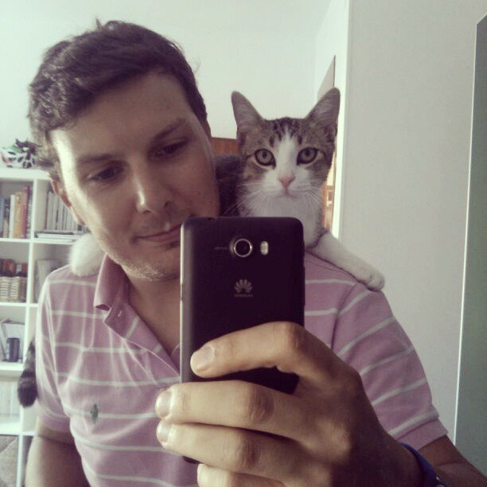

As the family's daughter tries to pick you up, you screech loudly enough to starte the little girl. You run to the pet store owner that picks you up and purr from his warm embrace. The owner convinces the family to choose a pet dog, making you feel safe and happy to stay.
As night falls by, the pet store owner picks you up while you are asleep and takes you to his home. He feeds you cheese, milk and all the love and affection you've always wanted. You're often shown by him to his friends and family, who instantly fall in love with your cute personaility. As you grow up, you become a loving and sweet cat that learns to adore people around you.

"Questo è il suo modo di dirmi che è contento che io sia tornato a casa. #mario #cat #wellcomeback #puppy #huawei #g600 #gatto #mirror #love #animals" by pierpeter is licensed under CC BY 2.0
GAME OVER. Start again!